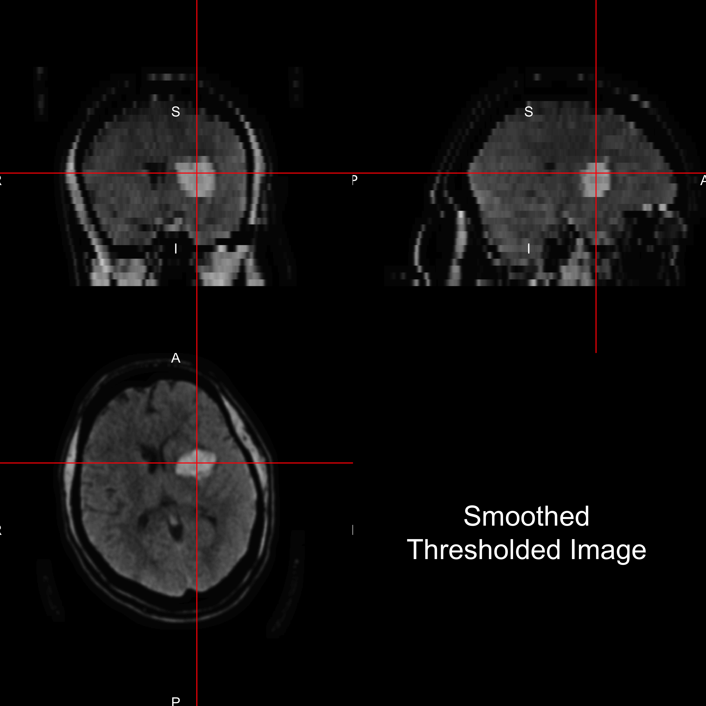
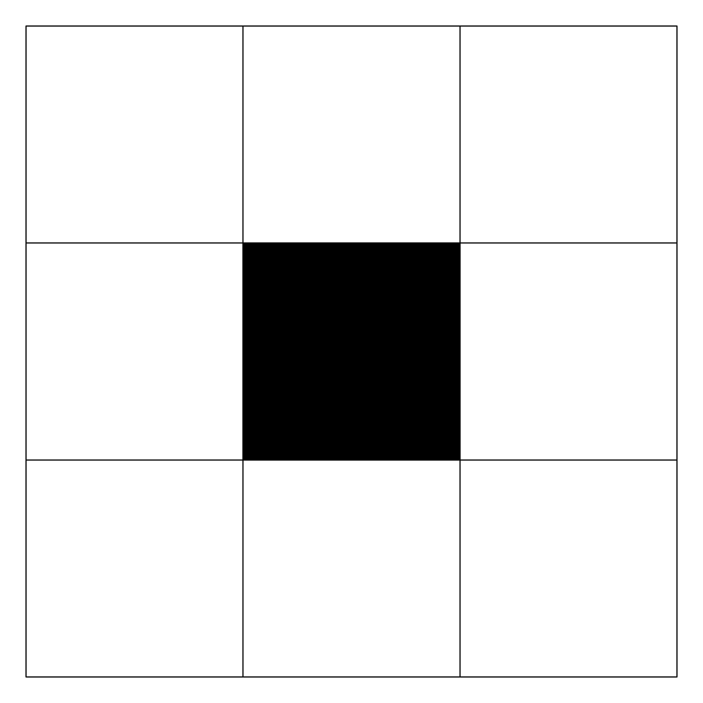
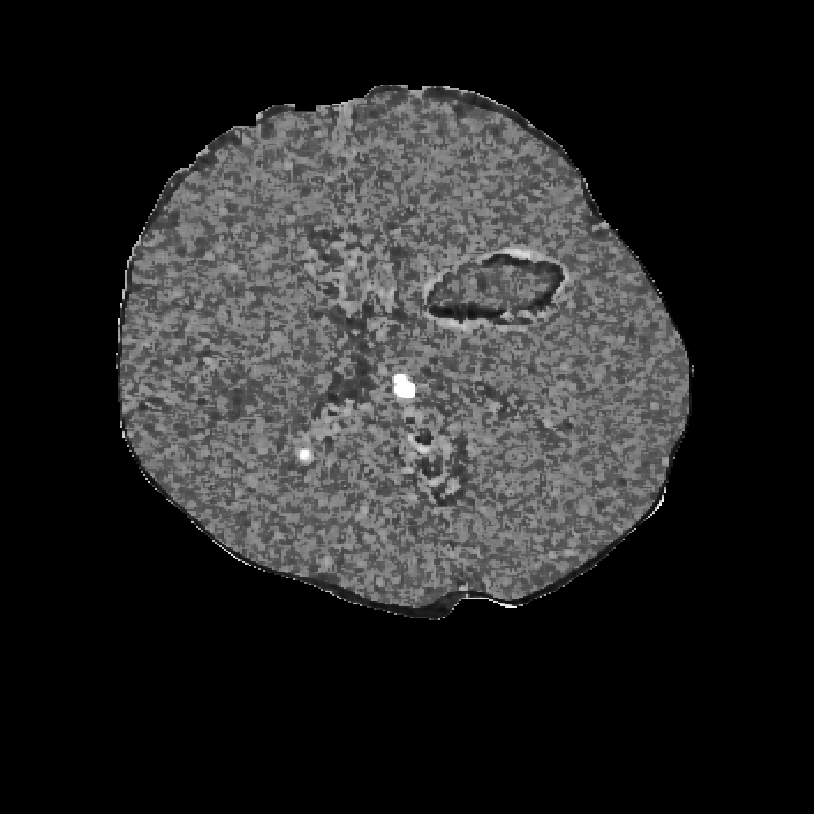
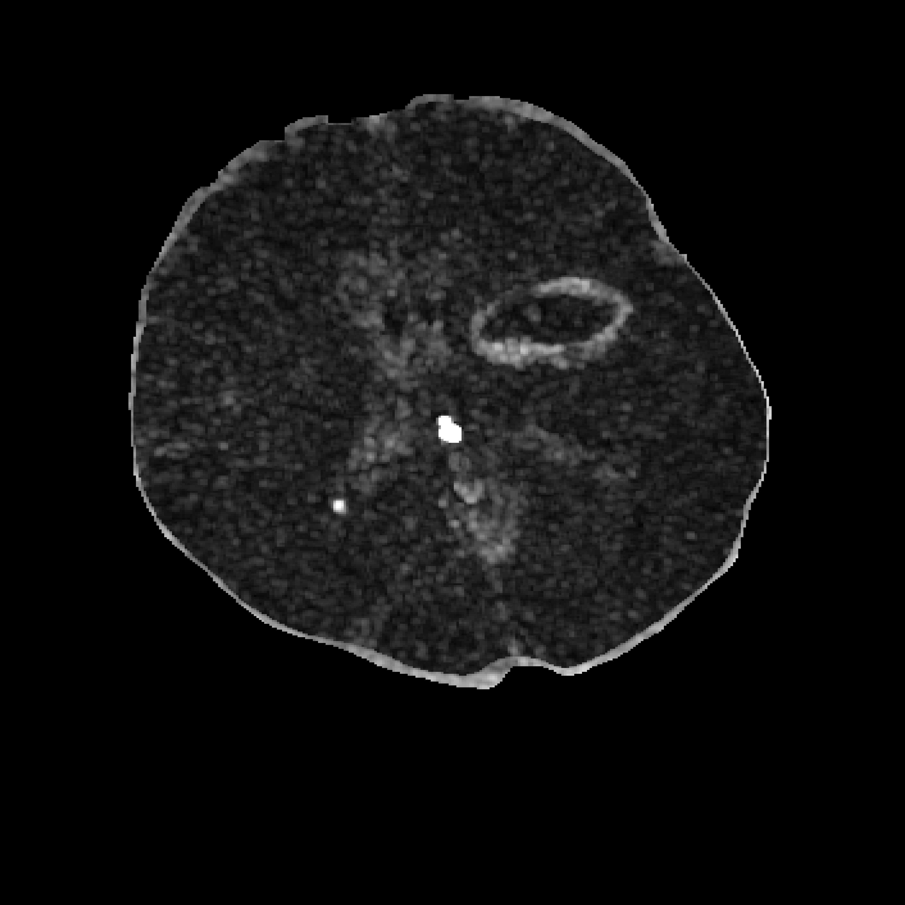
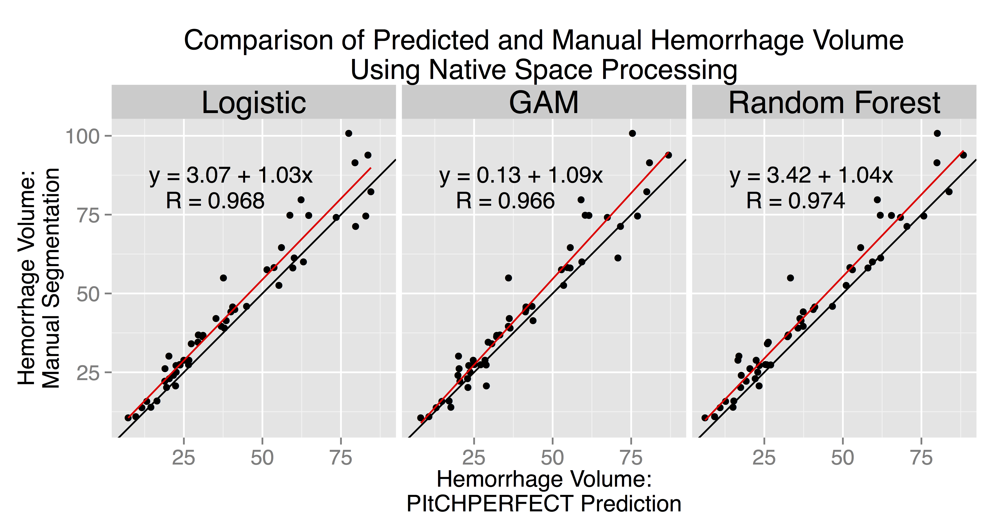

- At Johns Hopkins (JHU) for 8 years
- ScM Degree in Biostatistics in 2010 (JHU)
- Consultant at JHU Consulting Center
- Stroke clinical trial - 6 years
- Reproducible Reports - 3 years
- CT Imaging Analysis - 4 years
- fMRI lab - 2 years
September 17, 2015
Neuroimaging Experience
Writing Reproducible Software and Analyses
All analyses/figures/slides were written in R. Authored R Packages:
- fslr
(Muschelli, John, et al. "fslr: Connecting the FSL Software with R." R JOURNAL 7.1 (2015): 163-175.)
- brainR
(Muschelli, John, Elizabeth Sweeney, and Ciprian Crainiceanu. "brainR: Interactive 3 and 4D Images of High Resolution Neuroimage Data." R JOURNAL 6.1 (2014): 42-48.)
- drammsr
- extrantsr
- dcm2niir
- matlabr
- spm12r
- cttools
- itksnapr
- papayar
- WhiteStripe
- oasis
- SuBLIME
PItcHPERFECT: Overall Goal
Want to go from this 

What is Intracranial/Intracerebral hemorrhage?
- When a blood vessel ruptures into:
- Tissue ⇒ intracerebral hemorrhage (ICH)
- Ventricles ⇒ intraventricular hemorrhage (IVH)
- ≈ 13% of strokes

http://www.heartandstroke.com/site/c.ikIQLcMWJtE/b.3484153/k.7675/Stroke__Hemorrhagic_stroke.htm
Stroke Trial Data
Intracerebral (bleeds mainly in tissue, ICH) or Intraventricular (bleeds into ventricles, IVH) Hemorrhage trials
Minimally Invasive Surgery plus rt-PA for ICH Evacuation (MISTIE)
Multi-center, multi-national Phase II clinical trial

Larger ICH Volume ⇒ Worse Outcome
Measure ICH using Computed Tomography (CT)

Image Representation: voxels (3D pixels)


Muschelli, John, Elizabeth Sweeney, and Ciprian Crainiceanu. "brainR: Interactive 3 and 4D Images of High Resolution Neuroimage Data." R JOURNAL 6.1 (2014): 42-48.
CT scan Characteristics
- Voxel intensities are in Hounsfield Units (HU), which are "standardized" \[ HU(v) = 1000 \times \frac{\mu(v) - \mu_{\text{water}}}{ \mu_{\text{water}}- \mu_{\text{air}}} \]
- \(\mu\) is the linear attenuation coefficient and \(v\) denotes voxel.
- \(\mu_{\text{water}}\) and \(\mu_{\text{air}}\) are calibrated from each scanner.
CT scan Characteristics
Standard HU Ranges:
- Bone – high intensity (1000 HU)
- Air – low intensity (-1000 HU)
- Water - 0 HU
- Blood 30-80 HU
- White/Gray Matter ≈ 0 - 100 HU
CT scan Characteristics: Measures Human + Room + FOV

CT is NOT MRI (specifically not T1/T2)
| CT | MRI | |
|---|---|---|
| Domain | Diagnostic | Diagnostic/Research |
| Units | Houndsfield Units | Arbitrary |
| Template | One exists | MNI Standard |
| Measures | Measures humans/rooms/beds | Measures Humans |
| Methods | Sparse | Many |
ICH Prediction - Training data
- ICH are manually traced (gold standard)

Problems with Manual Segmentation
- ICH are manually traced (gold standard)
- Time-consuming
- Within and across-rater variability
- Not feasible for for large databases
- Hard to use for enrollment criteria (adaptive randomization)
Subject Data used: 111 scans (1 per patient)
| Overall | |
|---|---|
| Age (Mean (SD)) | 60.7 (11.2) |
| Male (N (%)) | 77 (68.8%) |
| Diagnostic ICH Volume (Mean (SD)) | 37.7 (20.2) |
| Diagnostic IVH Volume (Mean (SD)) | 3.2 (6.3) |
- Large ICH areas
- Small Intraventricular Hemorrhages (IVH)
Step 1: CT Skull Stripping
Muschelli, John, et al. "Validated automatic brain extraction of head CT images." NeuroImage 114 (2015): 379-385.
Want to go from this

CT Skull Stripping: Step 1 - Threshold
Threshold 0- 100 HU:

CT Skull Stripping: Step 2 - Smooth
Smooth Image with 1mm Gaussian
Result: 
CT Skull Stripping: Step 3 - Run BET
Run Brain Extraction Tool from FSL:
Result (Skull Stripped Image):
Imaging Predictors
Local Moment Information: Neighborhoods


Local Moment Information: Mean
For each voxel, neighborhood \(N(v)\), of all adjacent neighboring voxels in \(3\) dimensions. Let \(x_k(v)\) denote the voxel intensity in HU for voxel neighbor \(k\), where \(k = 1, \dots, 27\). \[
\begin{equation}
\bar{x}(v) = \frac{1}{N(v)} \sum_{k \in N(v)} x_k(v) \label{eq:mean}
\end{equation}
\] 
Local Moment Information: Higher Moments

Local Moment Information: Higher Moments
\[
\begin{align}
\text{SD}(v) &= \sqrt{ \frac{1}{N(v)} \sum_{k \in N(v)} \left(x_k(v) - \bar{x}(v)\right)^2 } \\
\text{Skew}(v) &= \frac{ \frac{1}{N(v)} \sum\limits_{k \in N(v)} (x_k(v)-\bar{x}(v) )^3 } {\left[ \frac{1}{N(v)} \sum\limits_{k \in N(v)} (x_k(v)- \bar{x}(v))^2\right]^{3/2}} \\
\text{Kurtosis}(v) &= \frac{ \frac{1}{N(v)} \sum\limits_{k \in N(v)} (x_k(v)-\bar{x}(v) )^4 }{ \left( \frac{1}{N(v)} \sum\limits_{k \in N(v)} \left(x_k(v) - \bar{x}(v)\right)^2\right)^2}
\end{align}
\]
 
Standardized-to-template Intensity
From \(72\) CT images from (Gillebert, Humphreys, and Mantini, 2014), we created a voxel-wise mean image \(M\) and voxel-wise standard deviation \(S\) image, after registering to a CT template (Rorden, Bonilha, Fridriksson, et al., 2012).

We created a standardized voxel intensity with respect to the template (\(z_{i,\text{template}}\)) using the following equation: \[ z_{i,\text{template}}(v) = \frac{x_{i}(v) - M(v)}{S(v)} \]
Global Head Information: Smoothed Images
Smoothing the original image using large Gaussian kernels (\(\sigma = 10mm^3, 20mm^3\)) can capture any potential homogeneity throughout the scan.
\(\sigma = 10\) 

Covariates 
PItcHPERFECT uses Logistic Regression
Let \(y_{i}(v)\) be the presence / absence of ICH for voxel \(v\) from person \(i\). \[ \text{logit}\left(y_{i}(v)\right) = \beta_0 + \sum_{k= 1}^{p} x_{i, k}(v)\beta_{k} \]
- Case-control sample voxels for a fixed percentage (25%) of outcome

Assessing Performance
For each validation scan we can calculate the following 2-by-2 table, where the cells represent number of voxels and a corresponding Venn diagram:
| Manual | |||
| 0 | 1 | ||
| PitCH | 0 | TN | FN |
| 1 | FP | TP | |

Dice Similarity
We calculate the Dice Similarity Index (DSI): \[ \definecolor{red}{RGB}{255,0,0} \definecolor{blue}{RGB}{0,0,255} \definecolor{purple}{RGB}{128,0,128} \definecolor{blac,}{RGB}{0,0,0} \frac{ \color{purple} 2 \times \# \text{TP} }{ \color{purple} 2 \times \#\text{TP} \color{black} + \color{red} \text{FN} \color{black} + \color{blue} \text{FP}} \]
- 0 indicates no overlap
- 1 means perfect agreement


Patient with High Dice Overlap: Manual Segmentation
Patient with High Dice Overlap:Automatic Segmentation

Patient with High Dice Overlap: DSI = 0.90

Patient with Median Dice Overlap

Comparison of Estimated Volume

Conclusions
Other Projects
- Segmentation of Gadolinium-Enhancing Lesions in Patients with MS on MRI
- Segmentation of Ischemic Stroke Lesions (ISLES MICCAI Grand Challenge)
- Association of Longitudinal Intracerebral Hemorrhage Location and Functional Outcomes
- Visualization of 3D and 4D Images
Thank You
Larger ICH ⇒ Worse Outcome
J. P. Broderick, T. G. Brott, J. E. Duldner, et al. "Volume of intracerebral hemorrhage. A powerful and easy-to-use predictor of 30-day mortality." In: Stroke 24.7 (1993), pp. 987-993.
S. Davis, J. Broderick, M. Hennerici, et al. "Hematoma growth is a determinant of mortality and poor outcome after intracerebral hemorrhage". In: Neurology 66.8 (2006), pp. 1175-1181.
L. C. Jordan, J. T. Kleinman and A. E. Hillis. "Intracerebral hemorrhage volume predicts poor neurologic outcome in children". In: Stroke 40.5 (2009), pp. 1666-1671.
S. Tuhrim, D. R. Horowitz, M. Sacher, et al. "Volume of ventricular blood is an important determinant of outcome in supratentorial intracerebral hemorrhage". In: Critical care medicine 27.3 (1999), pp. 617-621.